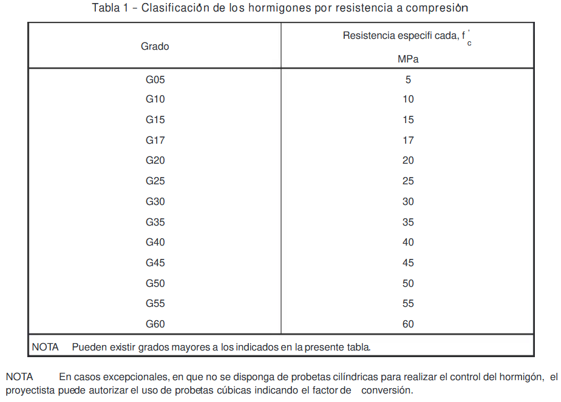

Estructura de hormigones
Contents
12. Estructura de hormigones#
{kind=link}
Incluye todas las tareas necesarias para la creación de formas de hormigón, taslado, vaciado, mezclado, vibrado, desmoldeo y curado del hormigón, así como la colocación de las armaduras de hierro necesarias para construir todos los elementos estructurales de hormigón armado de acuerdo con las formas, acabados y dimensiones que se muestra en los planos estructurales (Fernández,2020).
{kind=link}
12.1. Generalidades del hormigón#
El hormigón se describe como un material que resulta de la combinación de agua, arena, grava, cemento y eventualmente aditivos y adiciones, en proporciones suficientes, que al fraguar y endurecer adquiere resistencia (NCh 170 of 2016).
{kind=link}
12.1.1. Materiales#
Los materiales que componen el concreto deben mantenerse en lugares y depósitos donde sea posible asegurar que su calidad se mantenga dentro de los parámetros establecidos por las normas correspondientes.” (NCh 170, 2016).
Cemento:
{kind=link}
Debe cumplir con la norma NCh148, el fabricante debe especificar plazo de uso, el que no podrá ser superior a los tres meses, en caso de ser necesario ampliar el plazo señalado, se realizaran pruebas para asegurar el cumplimiento de acuerdo a la NCh148, no será aceptable el uso de cemento que presente signo de meteorización, en caso de insertidumbre, se realizaran pruebas para asegurar el cumplimiento de la NCh148 (NCh 170, 2016).
En los almacenes, los sacos de cemento deben colocarse sobre tarimas de madera sobre el suelo 15 cm y separadas de las paredes. Se aconseja disponer de dos accesos ya que los almacenes deben llenarse y vaciarse por riguroso orden de llegada.
Áridos:
Antes de su uso, los áridos deben dividirse en al menos dos fracciones, grava y arena, el tamaño máximo nominal debe ser menor o igual que: 1/5 de la menor distancia entre las paredes interiores del moldaje, 3/4 de la menor distancia libre entre armaduras, 1/3 del espesor de las losas armadas. Sin embargo, estas limitaciones de tamaño pueden modificar si se confirma que la docilidad y los métodos de compactación son tales que el hormigón se puede colocar en forma satisfactoria (NCh 170, 2016).
Se deben acopiar sobre una superficie plana libre de vegetación. Las pilas de almacenamiento se pueden crear en un radiante de hormigón de baja calidad si la carga de trabajo lo justifica. Dado que se pueden introducir cantidades significativas de arcilla o tierra que contenga material orgánico, la resistencia puede perderse como resultado, se debe tener especial cuidado para garantizar que el agregado no se contamine con la tierra cuando se retira o se mueve.
{kind=link}
Grava
{kind=link}
Arena
Agua:
El agua de amasado debe cumplir con la norma Nch1498, considerando las excepciones establecidas en 6.3.1 contenido máximo de sulfatos y 6.3.2 contenido máximo de cloruros, de esta norma (NCh 170, 2016).
{kind=link}
Aditivos:
Los aditivos para la preparación del hormigón deben cumplir con la norma Nch2182, si se utilicen aditivos no consideradores en esta norma, se deben seguir las recomendaciones del fabricante y se debe confirmar su efecto mediante de mezclas de prueba. El contenido de iones de cloruro de los aditivos cuya base sea cloruro de calcio utilizados en la fabricación de hormigón, no debe ser superior a los umbrales enumerados en el punto 6.3.2 contenido máximo de cloruros (NCh 170, 2016).
{kind=link}
Adiciones:
Se debe usar hormigón de prueba para evaluar las adiciones, asegurando que cumpla con las propiedades tanto del concreto recién vertido como del completamente curado (NCh 170, 2016).
{kind=link}
Aire:
Se relaciona con el aire atrapado en forma de burbujas durante el mezclado del concreto, según lo determinado por NCh 1564.
12.1.2. Clasificación del hormigón por resistencia mecánica#
Clasificación por resistencia a compresión Nch170of 2016
El hormigón se clasifica según su resistencia especificada a compresión a los 28 días, f’c, determinada en probetas cilíndricas de 150 mm de diámetro y 300 mm de altura, según NCh 1017 y NCh 1037, como se indica en Tabla 1.
{kind=link}
Clasificación por resistencia a tracción por flexión Nch170of 2016
El hormigón se clasifica con respecto a su resistencia especificada a tracción por fexión a los 28 días, ft , medida en probetas prismáticas con d = 150 mm de acuerdo con NCh1017, y ensayadas aplicando cargas P/2 en los límites del tercio central de la luz de ensayo, de acuerdo con NCh1038, como se indica en Tabla 2.
{kind=link}
12.1.3. Dosificación#
El propósito de la dosificación del hormigón es determinar las proporciones en que se deben combinar los materiales componentes para obtener las condiciones esperadas del hormigón deben cumplir y, teniendo en cuenta las propiedades generales en estado fresco y endurecido, determinar las proporciones óptimas que las satisfagan (ICH, 2022).
12.1.4. Propiedades del Hormigón#
Trabajabilidad
La trabajabilidad es la capacidad del concreto para ser movido, colocado, compactado y terminado sin segregarse o perder plasticidad de una manera que interfiera con las operaciones anteriores.
El diseño del hormigón debe tener en cuenta todas las manipulaciones que sufrirá en obra, incluido el transporte y/o los tiempos de espera en un entorno o clima específico.
Cono de Abrams para la medición de la trabajabilidad.
{kind=link}
Es bien sabido que cuanto más trabajable es el hormigón, más grande es el cono de Abrams. Esto no es cierto porque los elementos prefabricados como losas o bloques se pueden rellenar con hormigón de cono 0 cm y los elementos angostos como los muros de hormigón se pueden rellenar con hormigón de cono 15 cm.
{kind=link}
La cohesión y fluidez del concreto son dos factores que afectan su trabajabilidad. El hormigón es trabajable si es cohesivo para mantener la homogeneidad y evitar la segregación, así como fluido para una colocación simple. La fluidez del hormigón aumenta con una mayor cantidad de agua añadida, con el uso adecuado de aditivos, y se mantiene la cohesión del hormigón. La cohesión del hormigón se mantiene con un mayor contenido de partículas finas (arenas finas, cemento), con una adecuada cantidad de agua, y con la adecuada proporción entre los áridos.
Resistencia
Contenido del cemento
Dado que el cemento es el componente más activo de la mezcla, sus propiedades afectan en gran medida la resistencia del hormigón.
Relación agua-cemento
Dependiendo del tipo de cemento y árido utilizado, una determinada relación agua-cemento da como resultado una variedad de resistencias.
Influencia de los Agregados
Las características de los áridos que más afectan a la mezcla son el mayor tamaño posible de un agregado grueso. Los materiales con buena granulometría producen una mayor densidad. Particularmente influyen en la resistencia a la flexión la forma y la textura de los agregados. La resistencia a la tracción y a la flexión de las partículas de agregado.
Esta se puede medir a través de muestras de hormigón fresco, con el cual se confeccionan probetas para ensayos en laboratorio, o bien con hormigón endurecido, a través de testigos.
Testigos
{kind=link}
Probetas
{kind=link}
Impermeabilidad.
Prpopiedad del hormigón que con frecuencia se mejora al reducir el contenido de agua de la mezcla. Reducir el contenido de agua ofrece los siguientes beneficios tales como, Hay un aumento en la resistencia a la flexión y a la compresión. Es menos permeable, lo que resulta en una mayor estanqueidad y una menor absorción. Se mejora la unión entre capas sucesivas y entre el hormigón y la obra. Tendencia reducida al agrietamiento por contracción.
{kind=link}
Durabilidad.
La durabilidad del hormigón se puede describir como su capacidad para resistir los efectos del medio ambiente, el ataque químico y la abrasión, manteniendo sus propiedades. Siempre sera durable siempre que se conserve su forma original, calidad e idoneidad del servicio tras la exposición ambiental.
{kind=link}
12.2. Fabricación#
Segun Nch 170 (2016) tenemos:
Es necesario garantizar la homogeneidad del hormigón.
Equipos.
Para asegurar la tolerancia de la tabla 11 de Nch 170, deben ser calibrados o verificados con frecuencia.
Mantenga la carga por debajo de la carga máxima de amasado.
La dosificación debe ajustarse de acuerdo con el nivel de humedad de los agregados.
Los materiales deben medirse en masa, a excepción de las sustancias que se pueden cuantificar por volumen, como el agua y los aditivos.
Si cumple, el concreto menor que G17 se puede medir en volumen.
Medición de cemento en sacos o medios sacos.
Instrumentos con una tolerancia del 5% para medidas de volumen.
Dosificación en masa, corrección por esponjamiento.
Estipulación de fabricación en especificaciones del proyecto.
Mezclado
Para que se produzca un hormigón homogéneo, se deben utilizar las herramientas y técnicas necesarias.
La velocidad de rotación y la duración de la mezcla son algunos otros.
12.2.1. Equipos y maquinaria de Fabricación#
Plantas de hormigonado:
{kind=link}
Plantas de hormigonado movil:

Hormigoneras (betoneras):
{kind=link}
Cuadrillas de Concreteros:
{kind=link}
12.3. Transporte#
Segun Nch 170 (2016) tenemos:
El transporte debe realizarse de manera que se evite la evaporación del agua de mezcla, la pérdida de lechada o la segregación de agregados gruesos.
La homogeneidad lograda durante el amasado debe ser preservada durante el transporte del hormigón. Como resultado, se deben emplear las herramientas y los métodos adecuados. Es necesario tomar precauciones para evitar pérdidas de material, contaminación, segregación y evaporación. El equipo utilizado para el transporte debe ser hermético, de metal u otro material duradero y no absorbente, debe evitar la segregación o pérdida de material y ser químicamente inerte con los demás componentes del hormigón.
{kind=link}
12.3.1. Plazos de transporte#
Transporte a la obra.
{kind=link}
Se utilizan camiones mezcladores o agitadores para el traslado del hormigon a la obra. Salvo que se hayan adoptado medidas técnicas en el diseño de la mezcla que permitan ampliar el plazo, el transporte y la entrega, medidos desde el momento de la carga hasta el momento del final de la descarga, no puede durar más de 2 horas.
Transporte en la obra.
{kind=link}
Independientemente del modo de transporte utilizado en el sitio (carretilla, cinta transportadora, bomba, capacho) la cantidad de hormigón debe colocarse, entre otras cosas, en una ventana no mayor de 30 minutos después de haber salido el equipo agitador o mezclador. Si en el diseño de la mezcla se han adoptado medidas técnicas que lo permitan, este plazo podrá prorrogarse.
12.4. Colocación#
Segun Nch 170 (2016) tenemos:
Generalidades
Mantener la homogeneidad y evitar la segregación.
Asegurar la continuidad de los elementos.
Mantener la geometría y las dimensiones.
Evitar deformaciones de la armadura.
Que las características del hormigón no se vean afectadas por las condiciones del lugar.
Colocar en un lugar donde no haya hielo superficial ni suelo congelado.
Es importante evitar que la contaminación afecte las propiedades.
La velocidad y el vaciado del hormigón debe ser de acuerdo con el diseño del moldaje.
Debe estar dispuesto en capas o franjas.
Dentro de los últimos 20 cm del moldaje se deben evitar los nidos.
No se deben mezclar dos hormigones en el mismo elemento.
La temperatura de colocación debe ser mayor o igual a 5° y menor o igual a 35°.
Hormigonado en casos especiales de exposición segun norma Nch 170 of 2016.
Las juntas de hormigon deben estar limpias y libres de lechada de acuerdo con las especificaciones del proyecto y los procedimientos de tratamiento.
{kind=link}
12.4.1. Equipos y maquinaria de Colocación#
Capacho.
{kind=link}
Camion Bomba.
{kind=link}
Bombas estacionarias.
{kind=link}
Torres de hormigonado.
{kind=link}
12.5. Compactación#
Segun Nch 170 (2016) tenemos:
Para conseguir la máxima compacidad manteniendo la homogeneidad del hormigón y asegurando que las armaduras queden totalmente embebidas en el hormigón y se obtenga el acabado superficial necesario, la compactación debe realizarse con las herramientas adecuadas y siguiendo los procedimientos requeridos.
12.5.1. Equipos y maquinaria de Compactación#
Vibrado superficial de compactación externa.
pavireal=¿Qué es la vibración del hormigón? Consejos y Métodos
Cercha vibradora.
{kind=link}
{kind=link}
{kind=link}
{kind=link}
{kind=link}
{kind=link}
12.6. Curado y Protección#
Segun Nch 170 (2016) tenemos:
El curado del hormigon tiene como objetivo es mantener los niveles de humedad y temperatura del hormigón durante el tiempo necesario para que el hormigón alcance sus propiedades. Debe iniciarse tan pronto como las operaciones de hormigonado lo permitan y/o las condiciones ambientales lo requieran.
La proteccion del hormigon tiene como objetivo es evitar que el concreto quede expuesto a fuerzas externas que podrían cambiar sus propiedades a una edad temprana.
12.6.1. Métodos y plazos de Curado#
12.6.1.1. Entre ellos#
Lloviznas de agua.
Membranas de curado.
Telas húmedas.
Riegos permanentes.
Diques con agua.
Estanques y piscinas.
Arena.
Otro material que mantenga humedad y no dañe la superficie del hormigón.
12.6.1.2. Métodos que proporcionan humedad (tratamientos húmedos)#
{kind=link}
12.6.1.3. Métodos que previenen la pérdida de humedad#
{kind=link}
12.6.2. Selección del método del curado#
Condiciones climáticas(temperatura y humedad ambiente).
Agresividad del ambiente.
Geometría del elemento(vertical, horizontal, superficie expuesta, dimensiones, entre otros).
Requisitos de durabilidad y resistencia.
Requisitos de desmolde y material del molde.
El plazo de curado del hormigón depende de las circunstancias mencionadas anteriormente, específicamente de la temperatura y la humedad. Se debe seguir lo siguiente a menos que la especificación especifique lo contrario:
El curado se debe realizar por lo menos durante 7 días.
se permite discontinuar el curado cuando la resistencia real del hormigon sea de al menos el 70% de la resistencia especifica (madurez, probetas en obra, testigos).
Cuando la resistencia potencial del concreto, medida en muestras de laboratorio, es al menos el 85% de la resistencia requerida, se puede detener el curado.
12.6.3. Protección#
La superficie debe estar protegida de la lluvia o el granizo.
Las medidas de seguridad adicionales incluyen:
Retardadores contra la evaporación superficial.
Elementos que dan sombra.
Pantallas cortavientos.
Lloviznas para ambiente
Durante el curado se debe evitar:
Impactos.
Vibraciones.
Tráfico humano.
Cargas de materiales o equipos.
12.6.4. Equipos y maquinaria de Curado#
Esparcidor de Membrana.
{kind=link}
12.7. Diagrama de flujo Hormigonado Capacho#
.png)
(Osses,2015)
12.8. Diagrama de flujo Hormigonado Bombeo#
.png)
(Osses,2015)